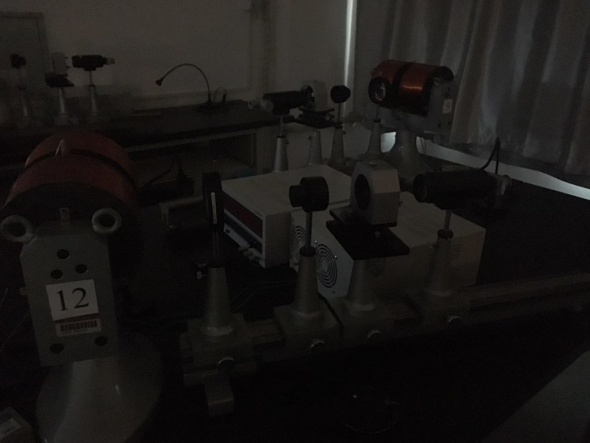
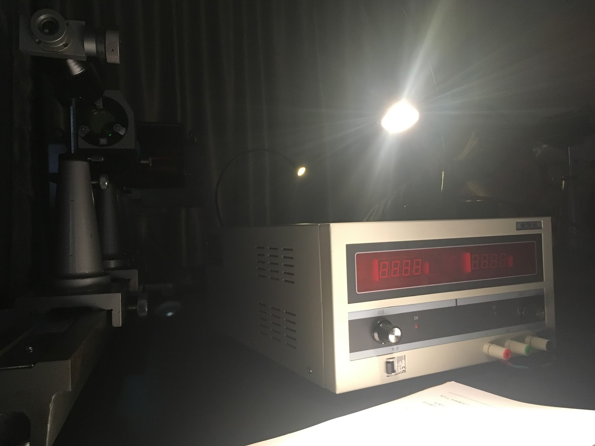
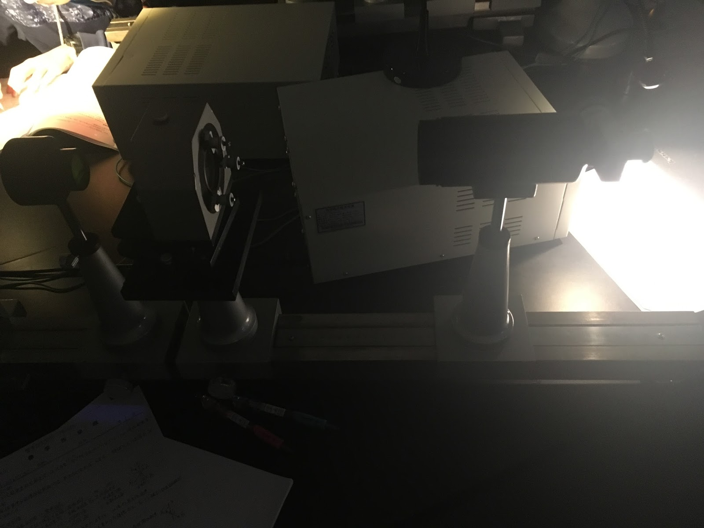
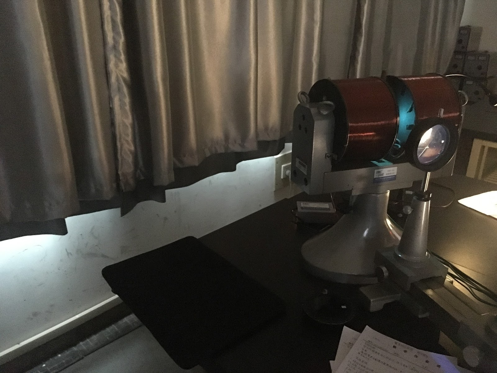
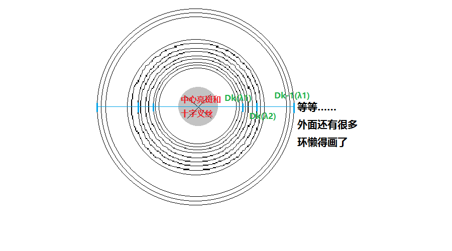
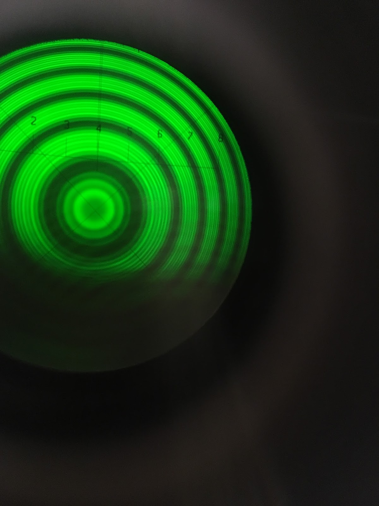
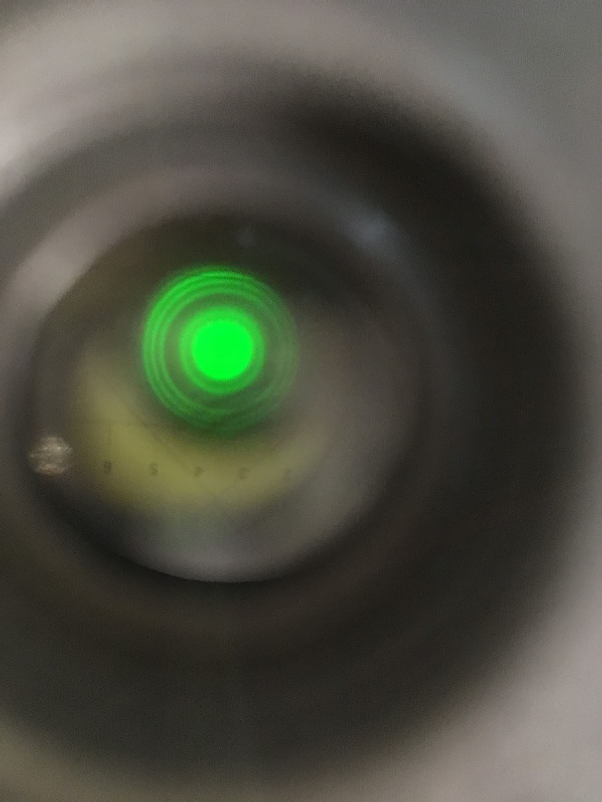
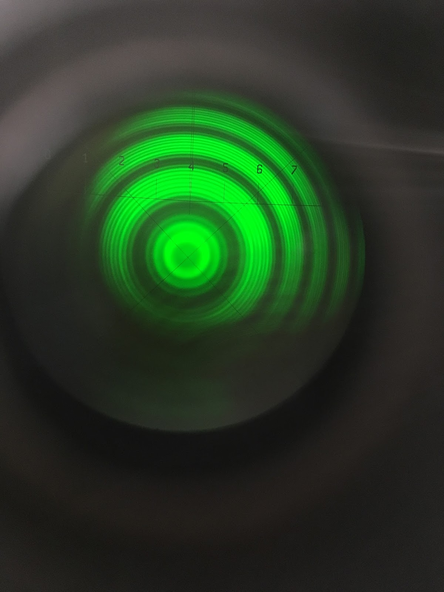

这是关于《物理实验B（2）》中的塞曼效应实验的总结。我记得一共要求做6次实验，我好像写了3次总结，现在只能找到2篇了。这是一篇搬运过来的旧博客，进行了一定的修改。
简单来说，塞曼效应就是原子在外磁场中获得能量，谱线分裂。具体原理大家都知道，什么汞原子546.1nm谱线在磁场中分裂成9条，这里就不写了。这个实验是用F-P标准具观察谱线的分裂，然后用测量望远镜去测干涉圆环的直径。
实验地点：6B605
实验时间：2小时57分钟
实验难度：中等偏简单（毕竟光学实验还要调光路，但不难调，而且老师挺友善的会帮你调。要测的数据也不多。之所以时间长了，是因为我脑抽测错数据了，又重来了一遍）
实验装置
因为是光学实验，所以屋里（和照片）比较暗。
下图是实验装置，从左到右依次是电磁铁、聚光透镜（上面可安装偏振片）、干涉滤光片、F-P标准具和测量望远镜。后面那个带显示屏的白箱子是励磁稳压稳流电源。

下图左上是测量望远镜（和它可以拧的那个部分），右下是电源特写。

下图仍然是F-P标准具和测量望远镜。

下图中的线圈是还没关灯的时候拍下来的电磁铁和汞灯。汞灯发出的光是蓝色的，通过滤光片之后是绿色的。

实验步骤
1. 点燃汞灯
就直接打开开关就行。汞灯是蓝的。
2. 调节光路
在这一步应该先把偏振片和滤光片拿下来，用白纸挡在F-P标准具前看一下，光是不是差不多都进入镜头中了。如果不行，就需要调节高度。然后调节望远镜的高度、消视差、消空程，使得望远镜里能看到比较清晰的几圈亮环；不行的话可以找老师问一下，没准还能看到几个老师热烈地讨论光学问题。此处没图，忘了拍没分裂的谱线状态了，总之是好多圈绿线。我上一个做实验的人大概挺靠谱的，调都没调就大概是准的。
然后把滤光片装上（因为实验室的滤光片不是特别精确，所以可能需要旋转一下，找一个从望远镜里看起来最亮的方向）。
然后把偏振片也装上。
3. 观察零场花样
旋转偏振片，从望远镜里观察谱线的状况（6或3条），记录偏振片读数方向和方位。偏振片上有个小白纸片指示方位。
这一条只是我照着实验指导书随便写出来的，因为我忘了测了。准确的说，因为我不知道应该看到什么，所以觉得偏振片转了一圈都没什么变化……
4. 加磁场
取下偏振片。 先把稳流电源的电压调到最大（不然会带不动电流），电流调到0，然后再打开开关，电流调到3.50A。（调到2.50A、3.00A、4.50A显然原理相同）
5. 测量、和
测量方法如下图（这些圈当然应该是绿的）。

而在测量过程中，实际上会看到的是下图。

可以看到上图中刻度4、亮斑中心和叉丝中心对齐了。
要测的直径如图。（最后将用到的波数计算公式是）
公式中的第级表明了谱线环距中心的远近，指波长，它反映了它是一套圆环（我说的“套”是指相距比较近的9个谱线环……看上图应该能意会是什么意思，它们是从一条谱线分裂来的）里的第几个环，靠里的编号小。任选两种中间有间隔的不同波长的光形成的谱线环，测编号大的谱线环的第级直径，和编号小的谱线环的第级、第级直径。
如果搞不清楚，那就直接测相邻的两套圆环里从左往右数第3条和第7条的直径，都测完了回去再算（x）。从上图可以看出来，第3、5、7条线最亮，所以这么选择也有一定的道理。
具体的测量直径的方法是，先调整中心亮斑对准十字叉丝（可能需要上下调整，如果看不清叉丝，可以用小台灯补一点光），然后就可以去读待测圆环的左右位置并计算出直径了。机械误差好像很大，所以要测3-5次时直接从一边打轮到另一边（中间尽量不要向回转）测一次，再从这一边转到这一边再测就行（就会有相当的误差）。
除此之外，我得到了一些这样的经验教训：
- 转螺旋测微器（我不知道学名是什么……大概意会一下）时扶着镜筒，不然镜头可能会晃动甚至移位
- 尽量使镜头最中间的刻度（应该是4）、叉丝和亮斑中心对齐。不调到4也一样能测，但问题是，粗测的范围只有0-8，如果不使刻度在两边均匀分布，可能测到比较大的圆环刻度就没了。
- 电流可能会有微小的变化。建议勤加观察，微调一下。
6. 收拾东西
关闭稳流电源时先把电流调到0再关闭电源，因为有大电感。
不要乱摸F-P标准具。虽然它长得很好看。
实验计算
数据处理的公式书上已经给了。
计算波数差：
计算（7和3当然是根据你测的是哪些谱线决定的）：
计算：
一些说明：
- 波数差公式里的是F-P标准具的间距，本实验中是2mm。
- 我也没搞懂为什么是这么算，量子物理没学好。嗯，有没有人愿意告诉我……（2018.7.14 UPDATE：至今也没人告诉我）
- 算的时候注意单位。
其他
还有几张没太拍好的实验过程图，不过手机能拍下来我已经很感动了。


2018.7.14 UPDATE：回头看这篇文章的时候，虽然感觉写得很详细，但我完全想不起来实验到底应该怎么做，为什么要这么做了。一部分原因是当时我也没搞懂原理……这样的话，总结简直毫无意义，以后我尽量以自己过一年还能看懂自己写的是什么为目标写总结好了。